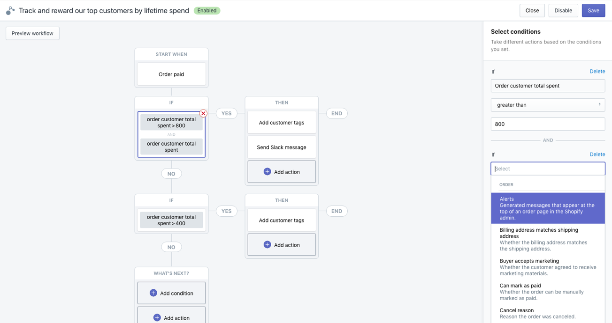

At Shopify, I'm currently a design intern on the
Flow team - pioneering what it means for merchants to automate their business by offloading time-consuming, repetitive tasks through a visual development tool.
With a large range of development expereince among our user group, the primary focus is to shrink the learning curve to adopt our product without compromising on more complex and powerful functionalities.

Projects
Since September, I've had experience working within Shopify's design system,
Polaris, optimizing users' visual experience and reducing cognitive load as the product's features and capabilities become more sophisticated. I have also streamlined language around the product by following content and composition guidelines. I constantly work closely with the development team to hand off and ship features to iteratively improve our users' experience.
For the past few weeks, I have been focused on a self-initiated research project around trust - a problem space I was able to identify through conversing with the team, as well as speaking with our primary and secondary users through interviews. The results and recommendations from the research will be guiding the design roadmap and better define success metrics for solutions.
Unfortunately, I cannot share full details about the features I'm currently working on yet.